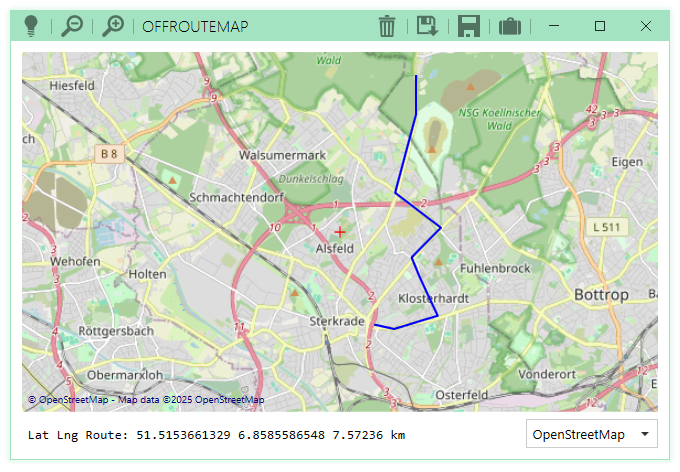

RouteEditor C#


RouteEditor C# is a simple but modern Windows Application in C# and WPF to get to draw and measure routes in kilometers, save and load them.
A GTK4 version of RouteEditor exists here: gitlab.com/deadlockz/routeeditor
Because Offline Maps does not work well, I remove it from OffRouteMap and call the Application RouteEditor C# now.

UI Features
- map
- select different maps
- move area via left click
- in/out zoom via mouse wheel
- display position of cursor in status line
- route
- display on map in all zoom states
- start, end and set a point via double click
- remove route from map (click on trash icon)
- remove last route point via right click
- display distance in status line
- settings
- GUI size
- initial/last position
- initial/last zoom
- menu (or similar)
- load route (file window)
- save route (file window)
- set tiles folder ("file" window, suitcase icon)
- ci/cd
- some unit tests via xUnit
- mock example
- code coverage report
- build a release executeable
- in code documentation and something similar to doxygen/breath
- some unit tests via xUnit
Dev Docs
See here!